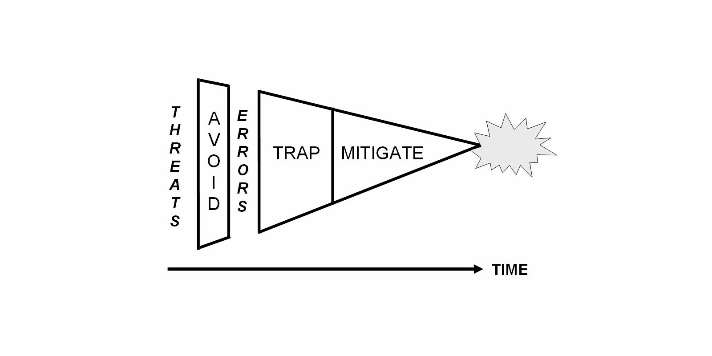
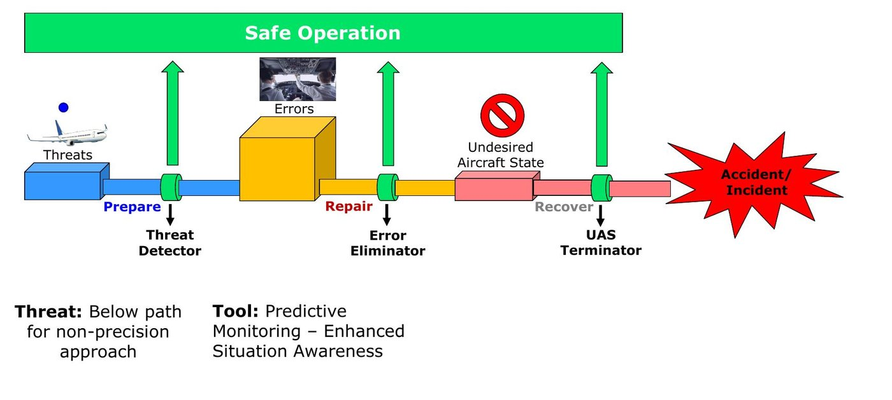

Lesson 07: Countermeasures and a TEM Case Study
Learning objectives
- Distinguish systemic and individual/team countermeasures.
- Apply planning, execution and review countermeasures.
- Analyse a case with the TEM model.

Countermeasures
Up to 70 % of crew activity may be countermeasure-related. Systemic countermeasures are "hard" resources in place before the flight: ACAS, GPWS, SOPs, checklists, briefings, training. Individual and team countermeasures are the skills, knowledge and attitudes developed by CRM training.
Tap a card to turn it over.
Execution and review countermeasures
Tap a card to turn it over.
Prepare – Repair – Recover
- Prepare (threats): identify and prepare — verbalise, verify, monitor (threat briefing, situation awareness, FOR-DEC).
- Repair (errors): identify and repair — resist, resolve.
- Recover (UAS): identify and recover — switch to UAS recovery, upset recovery techniques.
Case study: B777 non-precision approach, night
VOR approach, good visibility, autopilot in LNAV/VNAV, first officer flying. The approach ended about 1,000 ft below the path at 6.4 NM, and the go-around instruction from the tower was followed about 50 seconds late.



Classify the chain
Classify each situation: tap Threat, Error or Undesired aircraft state.
At 3,300 ft the autopilot changes from VNAV SPEED to VNAV PATH and starts a climb to intercept the computed path.
Threat — Automation behaviour not anticipated by the crew: an automation surprise — a threat.
The crew changes the target altitude to 970 ft and selects FLCH for the descent.
Error — Aircraft handling error (automation mode) against the procedure.
Classify the chain (2)
Classify each situation: tap Threat, Error or Undesired aircraft state.
The aircraft is about 1,000 ft below the approach path at 6.4 NM.
Undesired aircraft state — Aircraft handling UAS — recover the flight path.
The tower instructs a go-around; the crew replies 'climbing' but continues for about 50 seconds.
Error — Communication and procedural error — a go-around instruction must be followed promptly.
Lessons of the case
Monitor the flight path closely; cross-check actual against published altitudes; use appropriate automation modes; redirect attention to the priority task; follow a go-around instruction promptly.
Key takeaways
- Systemic + individual/team countermeasures; about 70 % of crew activity.
- Planning, execution, review countermeasures.
- Prepare (threats), repair (errors), recover (UAS).
Knowledge check
Which is a REVIEW countermeasure?
- SOP briefing
- Monitoring and cross-checking
- Inquiry and assertiveness
- Workload assignment
Answer: C. Review: evaluation of plans, inquiry, assertiveness.